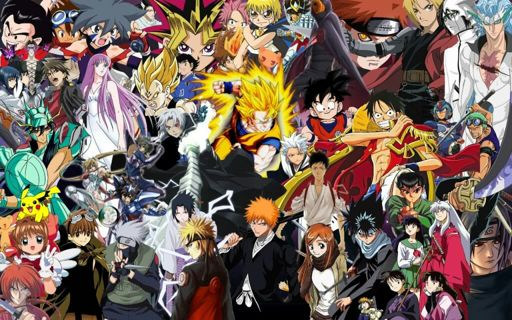

Es un manga pero en vez de cómic, es en vídeo. Los japoneses usan esta palabra para definir a los dibujos animados en general. Y en nuestro Pais la palabra ANIME la utilizamos solo para referirnos a la Animaciones Japonesas. Generalmente el Anime se refiere al sistema tradicional de dibujo de celdas, pero tambien se aplica a la animacion creada por Computadoras como por ejemplo Final Fantasy. Aunque no lo creas esta palabra tiene su historia, en un principio se conoció el término "Japanese Animation", luego se transformó en la palabra "Japanimation" para quedar de forma definitiva como anime. Tan sólo por tratarse de dibujos animados, la gente suele pensar en que el anime es lo mismo que las caricaturas para niños. Sin embargo a pesar de su habilidad para entretener a los niños, el anime también puede contener temas de adultos, de temas intelectuales e imágenes gráficas. El anime no es un género específico, sino que puede incluir y mezclar comedia, drama, acción, terror, ciencia ficción, crítica social, temas para niños e inclusive animación para adultos. Muchas veces las personas que no conocen mucho sobre el anime, piensan que el anime esta formado por obras que promueven la violencia y los conflictos existenciales de las personas, cuando no siempre es asi, esto se debe a que la mayoria de las personas (sobre todo adultas), estan acostumbradas a los dibujos animados norteamericanos, en los cuales las tramas son sencillas y los personajes muestran siempre la misma faceta de su personalidad, por lo que los conflictos se resuelven facilmente en un solo episodio de media hora, y lo mas importante, que estan dirigidos exclusivamente a los niños, no siendo asi en el caso de los Anime. La animación japonesa, por descender directamente del manga moderno (heredando todas sus características, como su estilo narrativo y sus temas) es más bien considerada en su país de origen como una forma narrativa más, esto es, otro medio de expresar ideas, dirigidas a niños, a jóvenes o adultos. Así, los personajes de las series de anime, sean héroes o villanos tienen sentimientos, aspiraciones, virtudes, defectos y una vida que pueden perder. La mayoria de las series de Anime presentan a sus personajes en situaciones cotidianas del estilo de vida japonés: gente en su lugar de trabajo, en la escuela, en rituales tradicionales japoneses. Todo es muy "normal" hasta que ocurre algo extraordinario para el público. Tal vez es esta mezcla de exagerada fantasía con aterrizada realidad lo que hace de la animación japonesa algo tan atrayente. Las fuentes de inspiración son diversas y muy variadas, e incluyen mitología griega, mitología nórdica, historias, obras clásicas, leyendas, etc. El mercado de anime en su país de origen es inmenso. Lo que llega a otros continentes es tan sólo una pequeña parte del total. Esto en cierta medida es bueno, pues permite una selección sistemática de buenos títulos en la mayoría de los casos. La calidad más distintiva del anime es la manera que: el anime se ocupa de los asuntos "de la vida real" que las caricaturas americanas no tocarían. Por ejemplo, la muerte de personajes es importante y es muy común en el anime, al igual que las relaciones complejas entre los personajes. Es una de las grandes diferencias entre el Anime y las caricaturas americanas. En conclusion, el anime es una forma exitosa de expresión, de narrativa y de cinema gracias a su excelente diversidad de temas, al manejo profundo de los personajes y a la calidad de la animación, logrando en dibujos e imágenes animadas situaciones que tomaría mucho tiempo y dinero producir con efectos especiales. De esta forma, se crean historias más intensas que atraen la atencion de la mayoria de las personas.